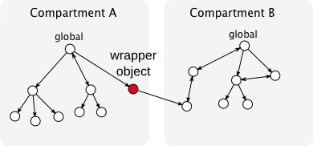

Enter the Compartment
Enter the Compartment
Gecko's Script Security Architecture Explained
about:bholley
Hi, I'm bholley. Hacking on Gecko since 2008. Been to 2 previous summits. MozCamp, etc.
this one different. Brought this up, turned into session.
A bit out of place. not necessarily fair. Should have conversation. Can't mirror. Everybody here.
work down in the bowels of Gecko. This thing called XPConnect. Plumbing.
Pretty deep, sometimes here you scream. Always welcome to ping me.
goal is to give you tools to know why doesn't work, and how to fix it.
Start with some history, delve into topics, lots of time for discussion/Q&A
Dark Times
Giving 3 years ago, more likely mrbkap, much less satisfying.
More haphazard, especially wrt security checks.
When. What do we check. How do we check that. What do we do if that fails.
Very janky and inconsistent.
Partly the result of lack of spec. Web wasn't designed with a lot of foresight
Security code spread around.
lacked clear rules, invariants, and the discipline to maintain them.
The Dawn of Compartments
all changed (or began) with FF4. Compartments. but not immediately motivated by security.
Have to understand how the Javascript heap works.
Before Compartments
Every object belongs to global. heap mess. But spaghetti in memory. Bad for GC.
Analogy - people living in a house together. Piles in the living room. Everyone suffers from one or two hoarders or messy people.
Every time you want to clean up, everyone has to be involved.
Twitter feed. GC needs to pick it up. Has to look at 200 tabs worth of memory. Every time.
With Compartments

Compartments. Put everything in the same region of memory. Then just GC that.
Awesome Security Implications
CGC cool, but less cool than hoped. But _awesome_ security implications.
Cutting edge. Existed in research, Gecko biggest.
Gave a more technical version of this talk to DM's group - Impressed.
Computing the Origin of an Object
Origins (principals) - basis for Security checks on the web. Need to know who object belongs to.
Old world - hard. Stuff in living room.
Ask the oracle. Does a bunch of computation. Maybe it doesn't know.
With compartments, you know by the memory address.
If everyone keeps their stuff in their room, the owner is obvious.
Given any object in the system, know who it belongs to.
Entering Compartments
Key to security hygiene.
Have a fundamental invariant - only objects from one compartment at a time.
"Enter the compartment". Exclusive relationship. Temporary monogomy.
Heavily enforced. Very safe - don't have to worry about references leaking between compartments.
Computing the Origin of the Caller
Other interesting question is who is responsible for the code that's currently running.
"Caller, Subject". For example, can the caller open an XHR to bank.com?
In JS, functions are objects, live in a compartment just like any other object
must enter to manipulate.
So we _know_ that, if we're executing any piece of code from the web, we must have entered its
compartment. Even if the JS engine calls out to other parts of Gecko!
No More Chrome Privilege Leaks!
Key Takeaway - Entering a compartment tells the JS engine that you're running script from that
compartment and that compartment only. Your security privileges are those of the compartment.
Can't trick chrome anymore. At least not as easily.
Just a few of the ways that this design answers very important questions simply and definitively.
Want to know your privileges? What compartment is your script running in?
Cross-Compartment Wrappers

Object references can't cross compartments. GC - need to know you can GC the one compartment only.
From a security perspective - need to know you're not leaking information across sec boundaries.
Idealistic. The web requires it. Create an iframe, access .contentWindow. Bam.
Cross compartment object reference. Or is it? It's a Proxy.
CCW. Only that is authorized to cross the boundary.
Allow it because it transitively wraps everything it carries across the boundary. Membranes.
Wall of latex. Can reach across, get a handle, bring back across, but not holding directly.
Heavy Dynamic Assertions
Membrane no good if there's a hole in it, even just one.
A World of Wrappers
Vanilla CCWs, invisible to script. Everything forwards. Identity is preserved. Totally transparent.
Can also apply customized policy. Very flexible.
Common case - light speed. No security checks when script manipulates objects
from the same global.
uncommon case - we create a wrapper. Maybe Vanilla CCW, maybe something else.
First need to talk a bit about how the DOM is implemented.
The DOM Tree

Lives in C++. Canonical representation of the document. Separate heap.
Accessing the DOM from JS

Represent objects across languages.
XPCWrappedNatives
DOM Binding objects
DOM operations get forwarded - onclick
Expandos do not - foopy
Would have been nice not to allow expandos, but that ship sailed.
Cross-Compartment DOM Access
Same-origin - load subpage in an iframe. No worries, everything transparent. Create transparent
CCWs to the reflectors, waltz around.
Different origins. Mediated by the wrapper membrane. Can apply strict security policy.
Protections are bidirectional. Reasons for this is not immediately obvious.
Filtering Wrappers - Security for the Target
Lots of sensitive stuff in the DOM. bank.com has your account # somewhere in the DOM.
Cross-compartment wrappers get locked down. Very strict subset of properties you're allowed to access.
Same-origin policy.
Xray Vision - Security for the Caller
Easiest, and most familiar, in terms of chrome accessing the DOM of untrusted content.
document.body. replace 'body' property with a getter that returns the body of a different document.
Really hard to avoid getting fooled.
Clean view of the DOM
Can guarantee JS bypass by never entering target compartment.
So you keep subject principal!
Good for privileged scripts. Read pixel data from a tainted canvas.
Waiving Xrays
- .wrappedJSObject
- Cu.waiveXrays()/Cu.unwaiveXrays()
Sometimes you don't want Xray protections - can waive them. WebKit can't.
Only available to privileged callers, where we only need one-way security.
Enter the target compartment, take on its principal
Different identity.
Be careful not to get fooled. Think hard. Malicious content script has home-field advantage.
Xray Limitations
Only works when there's a separate C++/DOM representation.
This is kind of arbitrary. Error vs DOMError. TypedArrays. Promise. etc.
Working on a solution with jorendorff.
COWs and __exposedProps__
Old world - content granted unrestricted access to any chrome object it could fine.
Simple idea - let script define the filtering policy
Didn't work for a number of reasons
hard to balance security with usability. Often not e10s-safe
If you want chrome JS to expose objects to untrusted content, either:
* Use JS-implemented WebIDL - get a robust C++ binding layer.
* Use Jetpack - build new mechanism based on cloning. Gabor can tell you more.
Brain Transplants and Wrapper Recomuptation
What do you do when the origin of the object needs to change?
Either origin of compartment changes, or object moves. We do both.
Really scary, survival at stake.
Now, really useful mechanism. Recomputation. WebKit jealous.